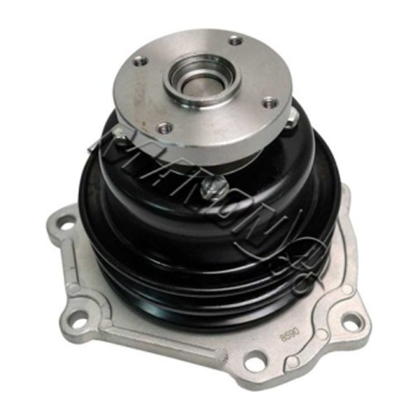

Available
Email for a quote
Nissan 8590-401 Water Pump
| OEM part number | 8590-401 |
| Fits | Nissan |
| Models / notes | FOS/FO3 (TD27) |
| Category | Cooling |
| Type | Aftermarket replacement |
Send us the quantity you need and we'll reply with pricing, usually within 24 hours. Not the exact part? We can source it. Send the part number or a photo.